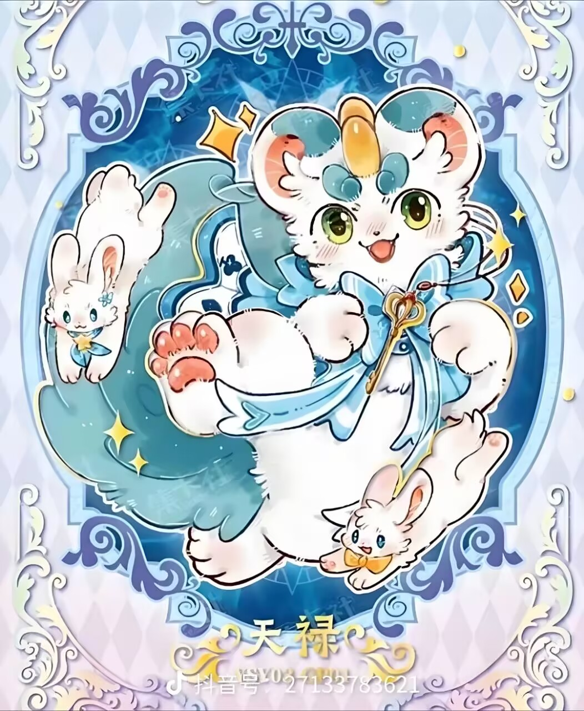
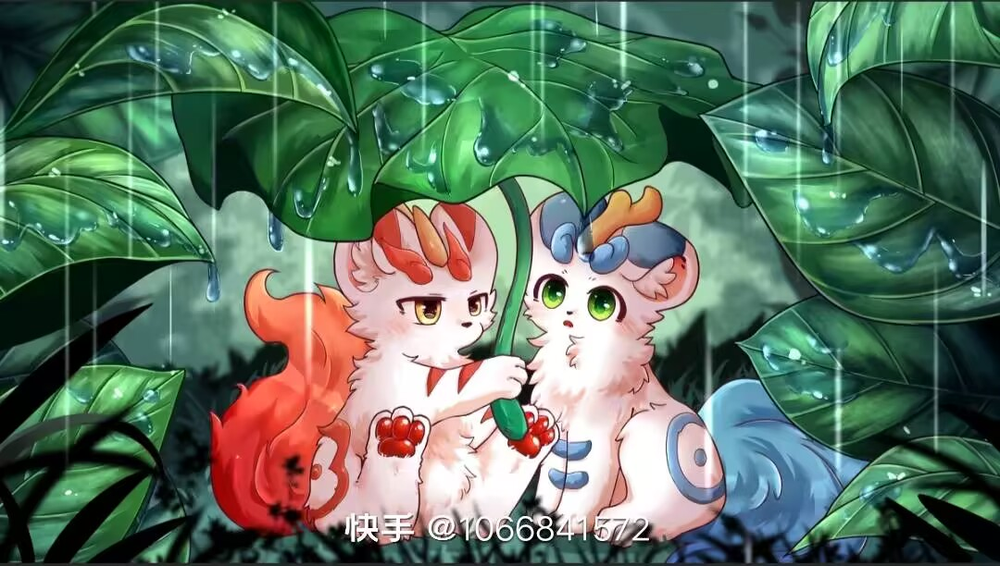
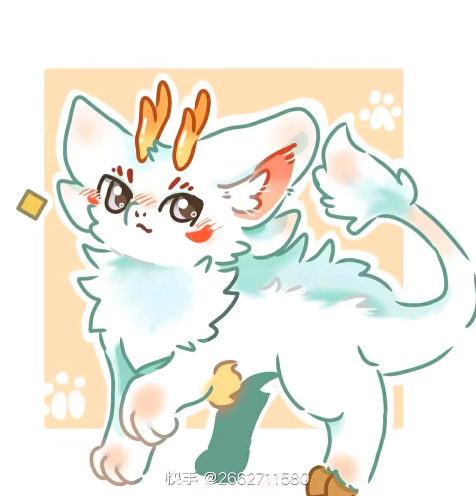

关于弟弟天禄
天禄是辟邪的弟弟，也是他最难放心不下的家人。天禄爱吃、爱闹、 脾气来得快，常常一边嚷着“本大爷”，一边把自己卷进新的麻烦里。 辟邪表面上总是无奈，实际上却一直留意着弟弟的情绪和安危。
他们会拌嘴，会因为小事争个不停，但真正遇到危险时，两个人总会站在一起。 辟邪不需要用很多话证明兄弟情分；他愿意陪天禄找回失去的记忆， 也愿意在天禄害怕或迷路的时候，成为他可以回头寻找的方向。
“他总是很吵。不过，他是我弟弟。”
THE WHITE FORTUNE
沉默的守护者 · 天禄的哥哥
辟邪是貔貅一族的神兽，也是天禄最重要的哥哥。他不习惯把关心挂在嘴边， 更多时候只是安静地站在弟弟身边，在天禄闯祸、迷茫或遇到危险时， 用自己的方式把他护在身后。来到鹿人店以后，他也逐渐和四不像建立起 一种安稳而默契的相处方式，在热闹的山海街里守住属于大家的日常。
“不用害怕。只要我还在这里，就不会让你一个人面对。”← 返回山海间

MEET THE WHITE PIXIU
他看起来冷静、克制，甚至有一点不好接近，但那份沉默并不是冷漠。 辟邪只是把更多情绪藏进了行动里：记得谁需要帮助，记得谁还没有回家， 也记得要在天禄闯祸之后，替他收拾残局。
THE PEOPLE HE PROTECTS
对辟邪来说，羁绊不是热闹的誓言，而是每一次回头都能看见熟悉的身影。 天禄是他放不下的弟弟，四不相则是与他关系亲近、愿意陪伴他们的人。

天禄是辟邪的弟弟，也是他最难放心不下的家人。天禄爱吃、爱闹、 脾气来得快，常常一边嚷着“本大爷”，一边把自己卷进新的麻烦里。 辟邪表面上总是无奈，实际上却一直留意着弟弟的情绪和安危。
他们会拌嘴，会因为小事争个不停，但真正遇到危险时，两个人总会站在一起。 辟邪不需要用很多话证明兄弟情分；他愿意陪天禄找回失去的记忆， 也愿意在天禄害怕或迷路的时候，成为他可以回头寻找的方向。
“他总是很吵。不过，他是我弟弟。”

四不相是辟邪十分亲近的伙伴，也是他在山海街生活中很重要的陪伴。 四不相温和、安静，有自己的节奏；和不善表达的辟邪在一起时， 不需要太多解释，一个眼神、一次并肩同行，就足以让彼此明白。
辟邪习惯把心事藏起来，而四不相愿意耐心陪着他。两个人的相处不喧闹， 却有一种稳定的默契：一起看着天禄，一起面对山海街里的日常， 也在彼此需要的时候安静地站在对方身边。
“四不相在，我就知道不用一个人面对。”